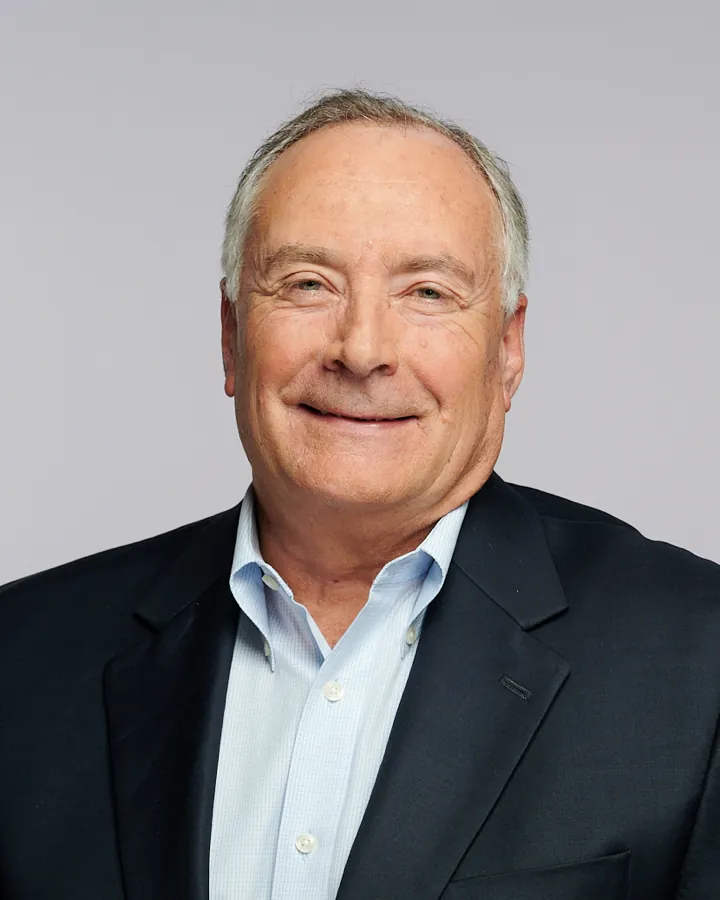
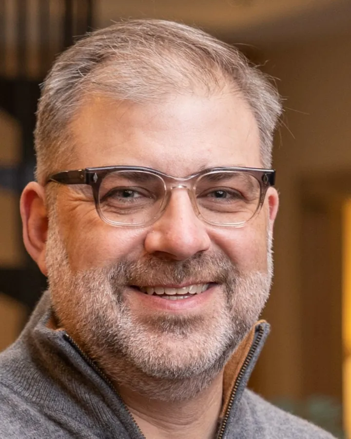
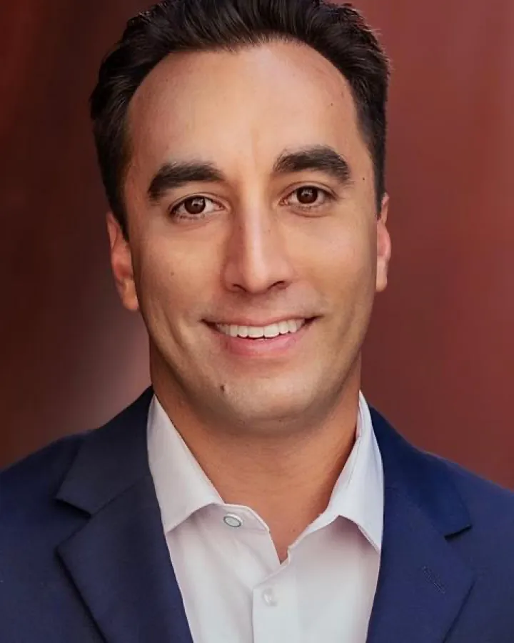
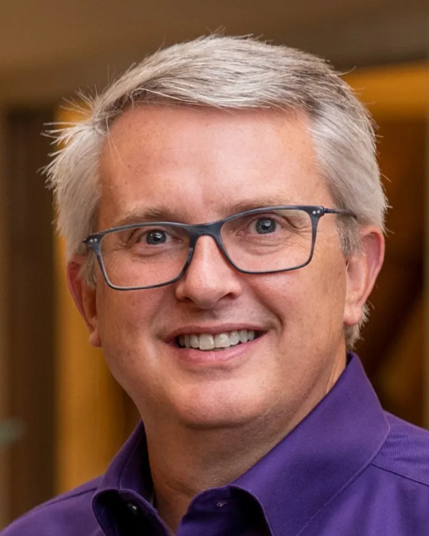
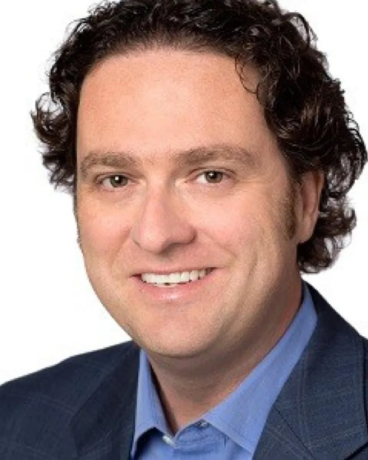
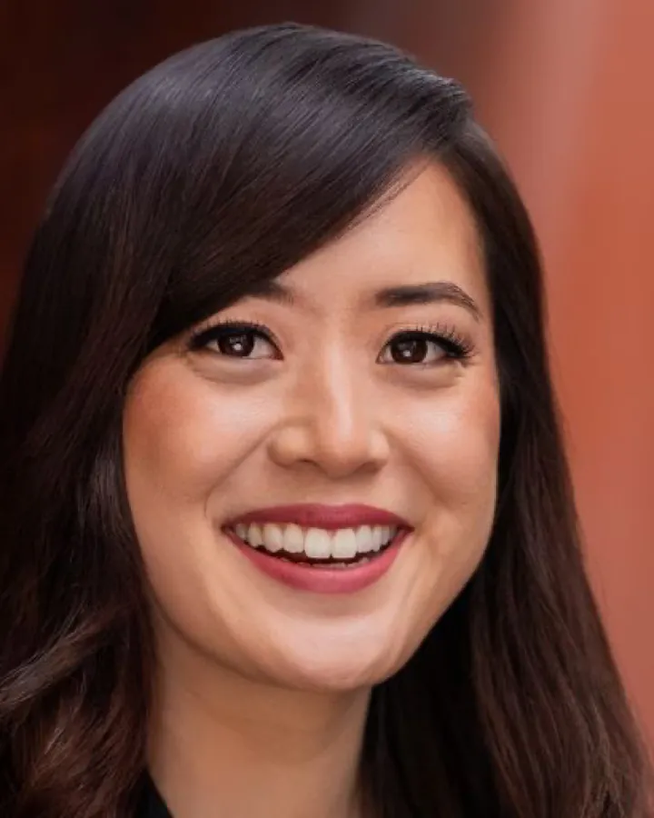
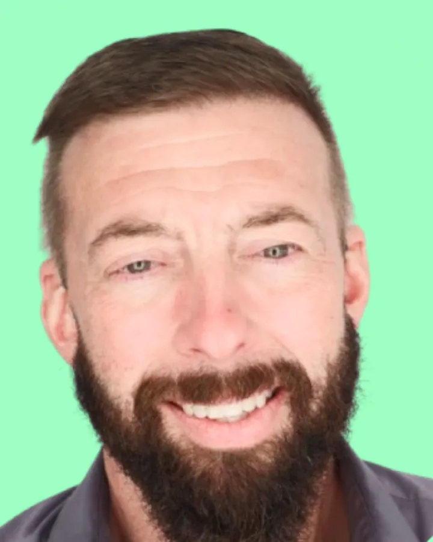
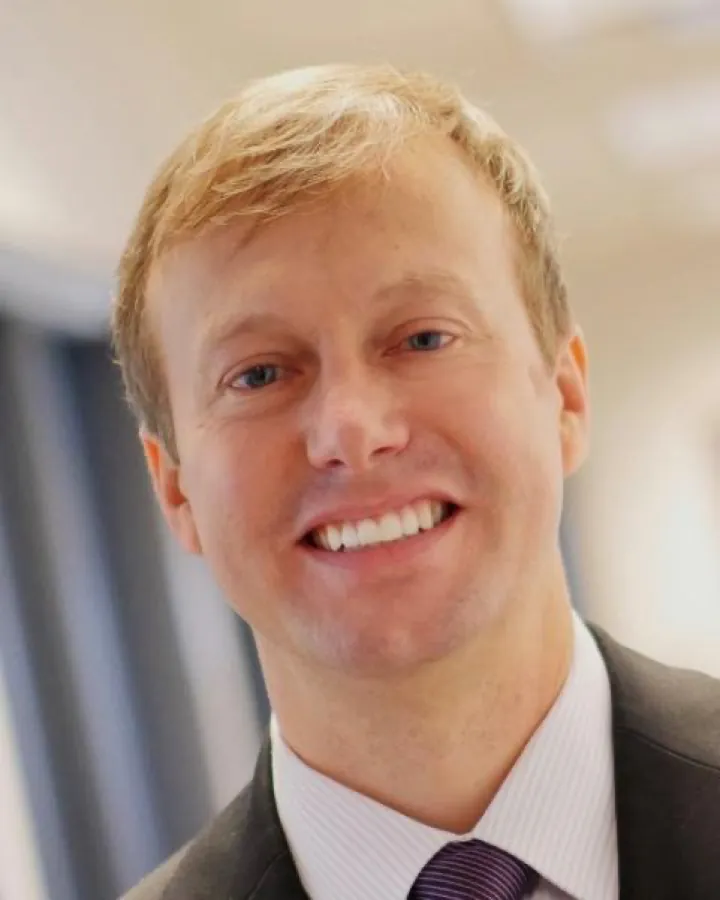

Venture capital
Joe Addiego
PartnerAlsop Louie Partners
Past guest speakers · 14
Investors, executives, founders, and engineers who have brought their work into the course since 2022.

Venture capital
PartnerAlsop Louie Partners
Gaming
Founder and CEORoblox
Entrepreneurship
Program Coordinator, Entrepreneurship and InnovationThe Wond’ry at Vanderbilt

Assistive technology
Co-founder and CEOLUCI

Venture capital
PrincipalBrave Capital

Assistive technology
Chief Operating OfficerLUCI

Blockchain and Web3
Co-founder and COOQuantum Art
Blockchain
Variadic Labs

Venture capital
Founder and Managing PartnerBrave Capital
Cybersecurity
VP of IT and Chief Information Security OfficerNashville Electric Service
IoT and 5G
Vice PresidentAT&T Business

Quantum computing
Vice President of EngineeringZapata Computing

Life sciences
President and Chief Investment OfficerCUREX Capital Advisors
EV charging
Co-founder and Chief Technology OfficerChargeNet Stations
Site visits
To Nashville Electric Service, where Stacy Mill and her colleagues opened up systems operations, a substation, and the network operations center. And to the Wond’ry, Vanderbilt’s innovation center, for a tour of the makerspace, the AR/VR lab, and the quantum design studio with Kevin Galloway, Garrett Thorne, Ole Molvig, and Mubarak Ganiyu.